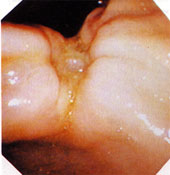
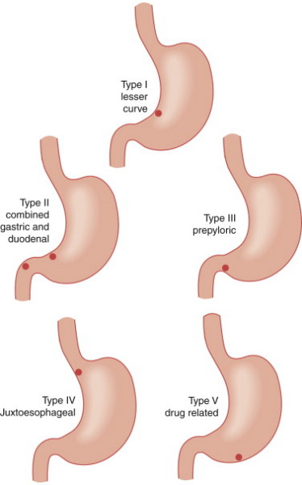
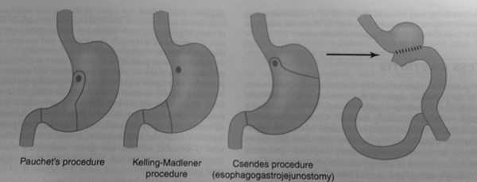

PEPTIC ULCER DISEASE
DEFINITION
Breach in the lining of the stomach or first part of the gut, with
indigestion, bleeding and occasionally rupture, caused by an
imbalance of factors that attack and defend the gut wall.
top D I A B M
I M home
INCIDENCE
Incidence
~10% incidence, 2% prevalence (US)
Decreasing (halved in 25 yrs).
Geography
GU in areas of social deprivation.
DU worldwide.
Age
20-50 yrs DU (10x more than GU)
40-60 = GU peak.
Sex
F>M GU.
M>F DU.
Risk Factors
H. Pylori, smoking and NSAIDs are the big 3
top D I A B M
I M home
AETIOLOGY
Pathogenesis
Normal Physiology
Acid is released from parietal cells in response to histamine,
gastrin and vagal stimulation.
Pepsin is released from chief cells due to cholinergic stimuli, also
gastrin.
Bicarbonate released from epithelium all the time, forming a
gradient across the mucous layer against attacking acid.
Mucous layer protects against pepsin and acid diffusion, and bugs.
Normal Balance
Balance between attacking and defending factors is disturbed (see
biological behaviour).
Attacking factors
"No acid, no ulcer"
Digestive enzymes (pepsin, HCl, bile salts).
Microorganisms - H. pylori colonizes and weakens mucosa.
Increased motility (in DU, as acid being dumped into the duodenum).
Stasis/ bile reflux in GU.
Defending Factors.
Mucus, bicarbonate.
Turnover of epithelium.
Normal motility.
Aetiology
Acid secretion generally higher in PUD patients, but only 1/6 have
secretions higher than normal range.
Increasing Attack
Deranged acid secretion
(increased Parietal cells, increased response to secretory stimuli,
increased gastrin release.
Increased serum pepsinogen I levels.
HSV 1.
Gastrinoma (Zollinger-Ellison Syndrome).
- rare; 1-2% of patients with duodenal ulcer.
Increasing ICP (Cushing Ulcers).
Hyperparathyroidism (DU) - hypercalcaemia increases gastrin
production).
Systemic acidosis (decreases pH of mucosal cells).
ETOH.
Corticosteroids.
- common to see lymphoma or transplant pts with ulcers.
Chronic renal failure/ Renal Dialysis (hypercalcaemia -> DU).
COPD (DU).
Alcoholic cirrhosis (DU).
Stress ulcers
- ventilation and coagulopathy; common to use prophylactic agents.
Burns (Curling Ulcers - DU).
Shock.
Intracranial injury/ surgery (Cushing Ulcers).
Probably, gastroduodenal dysmotility.
Decreasing Defense
H. Pylori (90% DUs and GUs).
- and if not treated, 80% will recur.
NSAIDs (break mucosal barrier; e.g. less bicarb under mucus)
Blood Group O --> increased bleeding.
Blood group non-secretion.
Mucous deficiency, bicarbonate Deficiency.
Defective cellular regeneration.
Abnormal microcirculation.
Prostaglandin deficiency.
Smoking.
Social deprivation.
top D I A B M
I M home
BIOLOGICAL BEHAVIOUR
Pathophysiology
Ulcers form when the balance between defensive and attacking factors
is upset.
Tends to be increased attack factors in DU, and decreased defence
factors in GU.
One of the factors above happens, either damaging the mucosa, or
failing to protect it.
This leads to destruction of the mucosa.
-> non-specific acute inflammation.
-> granulation tissue.
-> chronic inflammatory cell infiltrate and endarteritis at the
base of the ulcer.
Healing by fibrosis -> scarring.
Can cause problems if in the pylorus --> outflow obstruction (inflammation,
scarring)
Natural History
Can sit quietly, but the majority will present with pain.
This can be episodic over many years, usually flaring up in periods
of psychological stress.
Complications
Can lead to haemorrhage, anaemia, obstruction, or penetration into
the pancreas.
- see upper gi bleeding
Can also perforate.
GU's can be malignant.
Chronic inflammation can cause stricture and gastric outflow obstruction.
top D I A B M
I M home
MANIFESTATIONS
Pain (most common), bleeding, perforation, obstruction.
SYMPTOMS
Local
GU
Gnawing/ burning/ aching pain, relieved by alkalis or food,
vomiting.
- pain tends to occur 30m after eating.
- can go to back.
May get belching or reflux-type symptoms.
Can get night-time pains (increased gastric acid secretion during
late night and early morning (circadian).
DU
Pain as above.
- often starts an hour or more after breakfast, relieved by lunch,
recurs in afternoon, same in evening.
- may wake patient during night.
May involve pancreas posteriorly --> constant back pain.
Systemic
Weight loss
Anaemia if dripping
Complications
Bleed - malaena or haematemesis
Perforation
Gastric outflow obstruction
- suspect if vomiting, esp if old food/ copious/ persistent.
Gastric cancer
SIGNS
Observe
Pallor if bleeding, signs of shock.
Palpate
Epigastric tenderness (often the only sign; commonly absent).
Features of complications if relevant.
Auscultate
Succussion splash if pyloric stenosis.
top D I A B M
I M home
INVESTIGATIONS
Investigate those with good history / exam.
Haem
FBC (microcytic anaemia).
Biochem
Serum gastrin and pepsin
- 50-100 is N, >200 is high.
- gastrin may rise in hypo (atrophic gastritis; pernicious anaemia)
or hyper-secretion (ZE, HyperPTH) states
Gastric acid analysis
- basal acid output measured, followed by stimulation by histamine
or pentagastrin (maximal acid output).
--> increases from ~1.5-2.5 (3-5.5 in DU) to 20-30 (30-40 in DU)
Microbio
H. pylori.
Imaging
Barium swallow - "duodenal deformities and ulcer niche".
Less used now.
Showed the classic meniscus sign.
Scoping
Gastroscopy.

All need this for confirmed diagnosis.
DU: 95% are within 2cm of the pylorus
GU: 95% on LC and 60% within 6 cm of pylorus.
And to exclude malignancy.
- cancer usually has flat edges cf overhanging edges if benign.
- cancer more common if >2 cm.
- if hard to distinguish, better prognosis if Ca --> 50-75% cure
chance.
Biopsy should be taken at the same time for H pylori.
- Ideally 7+ bx (10=good) and brush biopsy.
- False +ve rare, false -ve in 5-10%.
Remember 10% of gastric ulcers are malignant
- particularly in older pts not on NSAIDs with new ulcers
- take 7 biopsies at least from around the lesion.
Classification of Gastric
Ulcers
Type I: Most common; usually <2cm between boundary between
parietal and pyloric mucosa; always in latter.
- antral gastritis accompanies. Usually H. pylori.
Type II: prepyloric, often associated with DU. Low risk of Ca.
Type III: In antrum, associated with NSAIDs.
top D I A B M
I M home
MANAGEMENT
Principles:
- heal the ulcer
- cure the disease
Medical
Stop smoking, NSAIDs, stress, foods that provoke it.
Most can be treated conservatively
Antacids for dyspepsia.
Evaluate indications for steroids so they can be discontinued.
Triple Therapy for H. pylori.
- eliminates in 90% at 6 weeks.
Continue proton Pump Inhibitors in GU (omeprazole, lansoprazole).
Repeat scope at 4-16 weeks (e.g. 6) in GU to assess healing.
Can stop PPIs after 2 months if underlying causes treated, with low
risk of recurrence.
Other
Lesser used treatments.
- H2-antagonists (cimetidine, ranitidine).
- Sucralfate = a cytoprotective agent; used in active duodenal
ulceration
Prostaglandins (misoprostol).
Surgical
Indications are obstruction, bleeding and perforation.
These days, intractability is rare, and only in complex
non-compliant patients is vagotomy considered
Most of the literature is out of date, from the pre-modern-treatment
era.
- most did well back then, these days, those referred are
selectively the most difficult patients around.
Vagotomy
Now rather historical.
Now rarely indicated because recalcitrant cases are uncommon:
Truncal vagotomy
- 1-2cm resected as each trunk enters abdomen.
- accompanied by a drainage procedure to maintain gastric emptying,
i.e. pyloroplasty
Small but real (10%) risk of dumping, diarrhoea and gastroparesis;
don't use.
Proximal gastric ('parietal cell')
vagotomy
- Spares the main nerves of Laterjet, takes the other branches
(proximal 2/3 of stomach), close to stomach
- Dumping and diarrhoea far less frequent.
--> procedure of choice for recalcitrant ulceration
--> except in prepyloric ulcer
Highly selective vagotomy.
Grading System
Type I = lesser curve of body
Type II = combined gastric and duodenal
Type III = pre-pyloric
Type IV = juxto-oesophageal
Type V = drug-related

Distal Gastrectomy
Type I
Resect lower 50% of stomach
Can either anastomose to:
- duodenum (Billroth I); preferred
- or jejunum loop (Billroth II); acceptable if Billroth I not
tension-free
--> either bring jejunal loop up anterior to the transverse colon
(simpler), or posteriorly through a hole in the transverse
mesocolon.
Antrectomy
Type II or III (hypersecretors).
Vagotomy now reserved for rare cases (e.g complicated ulcers in
noncompliant pts)
Subtotal Gastrectomy
Historical.
Resect 2/3 - 3/4 of stomach.
Billroth II generally done.
High Ulcers
Type IV ulcers are challenging.
Pouchet procedure is 1 option
- distal gastrectomy along lesser curve; vertical extension to
include the ulcer, then Billroth I or II anastomosis.
Csendes procedure.
- when 2cm or less from GOJ
- most of stomach resected up to GOJ, excision and coverage of the
hole with anastomosis to a Roux-limb.

Giant Gastric Ulcers
3cm+
Mostly along lesser curvature.
- malignant in 30%
Early surgical treatment and work up for cancer.
CT workup and en-bloc resection if an occult or obvious malignancy
is present.
Complications of Surgery
Early
Duodenal stump leakage, gastric retention, haemorrhage in
post-operative period.
Late
Recurrence (10% vagotomy / pyloroplasty); 2-3% after
vagotomy, antrectomy and subtotal gastrectomy.
- a deeply eroding ulcer could cause a colic fistula
--> severe diarrhoea, malnutrition, and weight loss.
--> diagnosed by barium enema reliably, and upper GI series
unreliably.
--> resect, move to partial gastrectomy, restore colonic
continuity.
Dumping Syndrome
- noted in most; problematic in only 1-2% of patients after months
- two types of symptoms
--> Cardiovascular & gastrointestinal
--> after eating, palpitations, sweating, weakness, dyspnea,
flushing, cramps, vomiting, diarrhoea, rarely syncope.
- treat by diet therapy to reduce jejunal osmolality. Low in
carbs, high in fat and protein, may need to avoid milk. Dry meals,
fluids between meals, ?somatostatin.
Alkaline Gastritis
- reflux of duodenal juice into stomach; invariable, usually
innocuous, but sometimes causes marked gastritis.
- see a minor degree of gastritis in most Billroth II patients
anyway; endoscopy fairly non-specific
- indication for operation is persistent severe pain
--> Roux-en-Y gastrojejunostomy with a 40 cm efferent jejunal
limb.
Anaemia
Iron deficiency develops in 30% of partial gastrectomy patients in 5
years.
- ensure no recurrence (marginal ulcer) or tumor before diagnosing
Vit B12 anaemia may also occur
Post-vagotomy Diarrhoea
5-10%, 1% severely troubled.
Usually episodic, usually well treated with constipating
agents.
Gastroparesis
Prokinetics may help
Emergencies
See perforation.
And bleeding.
And obstruction
top D I A B M
I M home
Refs
Updated from Doherty
And Cameron